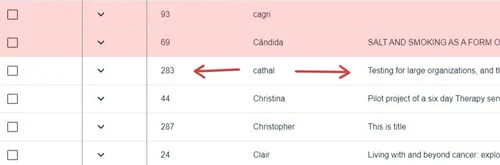
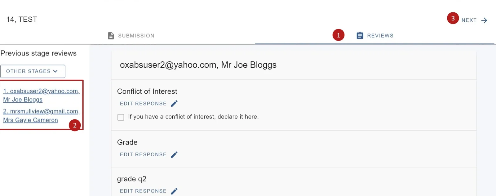
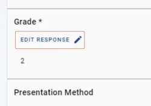
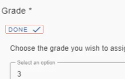
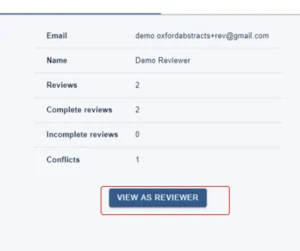
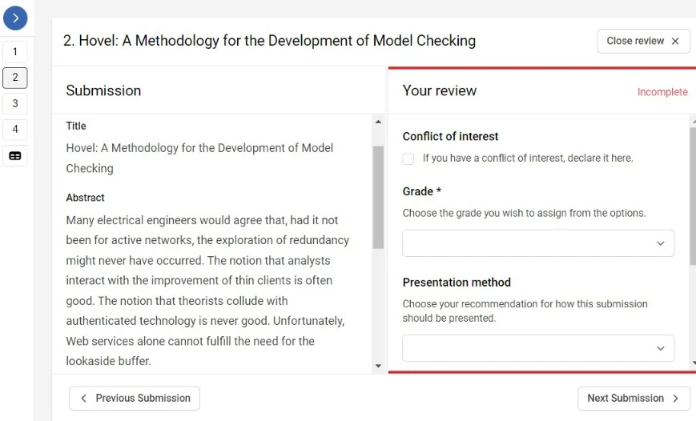

Editing a review or completing a review on behalf of a reviewer
For event organisersNot an organiser?
You can edit or complete a review on behalf of an assigned reviewer, should you require.#
NB: in order to complete a review on behalf of someone else, the submission must be assigned to a reviewer.
Go to Event dashboard → Reviews
Skip to View as a reviewer
There are two tables - the default option isReviews by submission (ordered according to submission ID). You can edit or complete reviews here. If you wish to view the review as a reviewer would, you will need to go to Reviews by reviewer (see below)
It's helpful to be familiar with The Reviews Table before you begin editing or completing a review.
Click anywhere in the row of the submission that you wish to edit.

You will see two tabs at the top of the screen - Submission, and Reviews. The Submission will display by default in this view.
Click on the 1) Reviews tab. You can access other reviews of any submission in this view, by 2) clicking on the relevant email address in the left hand part of the panel.

3) Click Next in the top right hand of the screen to access the reviews for the next submission.
To edit the response of any question, click on Edit Response

Make your changes and click Doneto save.

View a review as a reviewer
Click in your chosen row as above
Click View as reviewer in the Reviews by reviewer table.

Click Start reviewing to complete or view the review. When you have finished, click Close reviewer view.


Common questions#
I need to complete a review on behalf of a reviewer. How do I do that?#
See Editing a review or completing a review on behalf of a reviewer.
Didn't solve it? Ask our support team
No question is too small, and there's no charge for asking. Raise a ticket and someone who knows the software will pick it up.
Did this page solve it?
Thanks — this helps us fix it.